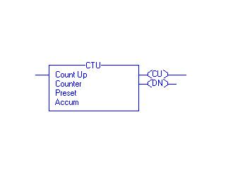
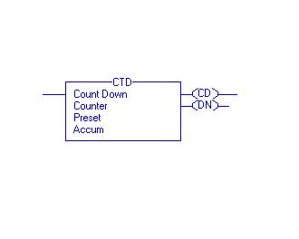
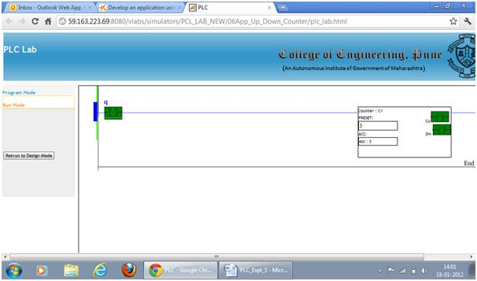

Aim
To Develop an application using UP/DOWN counter
Objective:-
- 1. Study Counter timing diagram.
2. Develop an application specific ladder program using counters.

Q1.
The term CTU stands for
Counter Time Up
UP Counter
Counter Timer Unit
Q2.
The word ‘DN’ in case of counters/timers stands for
Duration bit
Done bit
Direction bit
Q3.
The overflow bit is available in
Counters
Timers
Both timers and counters
Q4.
The accumulator bit is available in
Counters
Timers
Both timers and counters
Q5.
In which of the following applications counter block is necessary
Automatic drilling machine
Real time clock
Bottle filling plant

Introduction:
Counters are used to count number of objects or to count cycles of a typical process. Consider an example of bottle filling plant, in that counter is used to count number of bottles filled in a particular batch.
In counter instruction the accumulated value will increase only when it completes the transition from open to close or vice versa. It doesn’t check how long contact stay closed, it only looks for the transition. There are two basic types of counter
-
1) Up-Counter (CTU)
2) Down-Counter (CTD)
In Up counter when contact change over takes place accumulator value increments by one. While in down counter when changeover takes place accumulator value decrements by one.
The instruction blocks of up counter and down counter are as shown below.

The bits used in this instruction, along with their significance, are as explained below.
Count Up (CU) Bit: - The Count Up enable bit indicates the CTU instruction is enabled. The data type used is Boolean indicated as BOOL.
Count Down (CD) Bit: - The Count Up enable bit indicates the CTD instruction is enabled.
Done (DN) Bit: - The done bit changes state whenever the accumulated value reaches the preset value. The data type used is Boolean indicated as BOOL.
Overflow (OV) Bit: - The overflow bit indicates the counter exceeded the upper limit of 2, 147, 483, 647. The counter then roles over to -2, 147, 483, 648 and begins counting up again. The data type used is Boolean indicated as BOOL.
Underflow (UN) Bit: - The underflow bit indicates that the counter exceeded the lower limit of -2, 147, 483, 647. The counter then roles over to 2, 147, 483, 647 and begins counting down again. The data type used is Boolean indicated as BOOL.
Preset (PRE) Bit: - It specifies the value which the accumulated value must reach before the instruction sets the done bit. The data type used is Double integer indicated as DINT.
Accumulator (ACC) Bit: - It specifies the number of transitions the instruction has counted.
The timing diagram illustrates the functioning of all the bits in sequence.
Timing Diagram for Up Counter:-

Timing Diagram for Down Counter:-

The following example, will illustrate the function of each bit of Up Counter after downloading the ladder and putting the PLC in run mode.

Here for every transition of start bit, counter accumulator value will be increased by one and for every count lamp 1 will glow on. When accumulator value becomes 5, lamp3 will glow on. To reset the counter and make accumulator value zero, reset bit is used.
The following example can illustrate the function of each bit for Down Counter.

Here accumulator value of CTD is 9. For each transition of start bit this value will be decremented by one. Whenever start bit becomes on, lamp1 will glow on. Lamp3 will remain on till accumulator Value becomes greater than or equal to preset value. When it becomes less than preset then lamp3 will glow off.
The Function Block Diagram, Timing diagrams, and ladder diagram solutions are as per the available PLC(Rockwell Automation) in College of Engineering Pune.

The counter counts the pulses received at input. The pulses can be given by toggling the input bit “q” in this case. The counter will keep on counting till it reaches the preset value set by the user. Once the accumulator is equal to preset the DN bit will be energised. After this instant if next pulse is detected the accumulator will increment without changing the status of DN bit.
To reset the counter use “Reset” command so that the counter can be configured for new counts without reloading the page. Please note the tag of the reset bit must be the tag of counter e.g.“CU1”.
The screen shot will appear as shown below.

In case of down counter the entire procedure will remain same. Only the number of counts are to be entered in the accumulator tab. The preset value is zero. When the input contact closes, the accumulator will go on decrementing, will reach to zero '0' value and the status of done bit will change.
To reset the DN counter use “Reset” command so that the counter can be configured for new counts without reloading the page. Please note the tag of the reset bit must be the tag of counter e.g. “CD1”.

Q1.
In up counter instruction the accumulated value will increase only when
There is complete transition from low to high
There is complete transition from high to low
Can’t Say
Q2.
In down counter instruction the accumulated value will decrease only when
There is complete transition from low to high
There is complete transition from high to low
Can’t Say
Q3.
The duration of input transition pulse is the deciding factor for counting the pulse in case of counters
True
False
Not always false
Q4.
The done bit of counter changes state when
the accumulated value reaches the preset value
The overflow bit is set
The accumulated value reaches to overflow value
Q5.
In case of CTU the done bit status is ---- when the accumulated and preset values are equal
Close
High
Low

- 1. List the applications of up counters.
2. With timing diagram explain the working of up counter.
3. Write a ladder program to flash a lamp 10 times with 10sec duty cycle.
4. Explain the difference between up and down counter w.r.t done bit.
5. Explain necessity of down counter with suitable example.

- Gary Dunning, “Introduction Programmable Logic Controllers”, CENGAGE Learning, 3rd Ed., 2006.
- John R. Hackworth, Frederick D. Hackworth Jr., “Programmable Logic Controllers ”, Pearson, 2004.
- W.Bolton, “Programmable Logic Controllers”, Elsevier, 4th Ed., 2006.
- http://plcbasics.net/
- http://www.plcmanual.com/
- http://literature.rockwellautomation.com/
- http://www.automation.siemens.com/